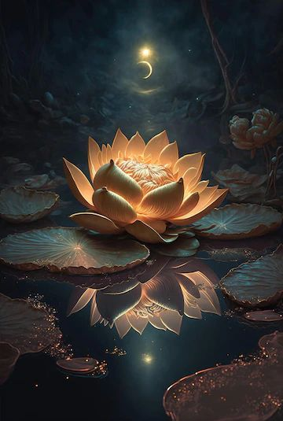

A flower, sometimes known as a bloom or blossom, is the reproductive structure found in flowering plants. Flowers produce gametophytes, which in flowering plants consist of a few haploid cells which produce gametes. The "male" gametophyte, which produces non-motile sperm, is enclosed within pollen grains; the "female" gametophyte is contained within the ovule. When pollen from the anther of a flower is deposited on the stigma, this is called pollination. Some flowers may self-pollinate, producing seed using pollen from the same flower or a different flower of the same plant, but others have mechanisms to prevent self-pollination and rely on cross-pollination, when pollen is transferred from the anther of one flower to the stigma of another flower on a different individual of the same species.
